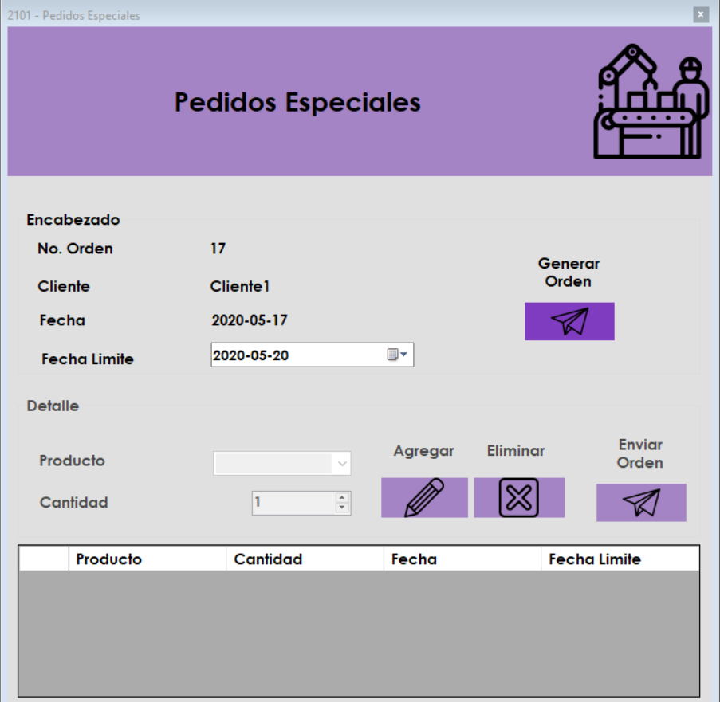
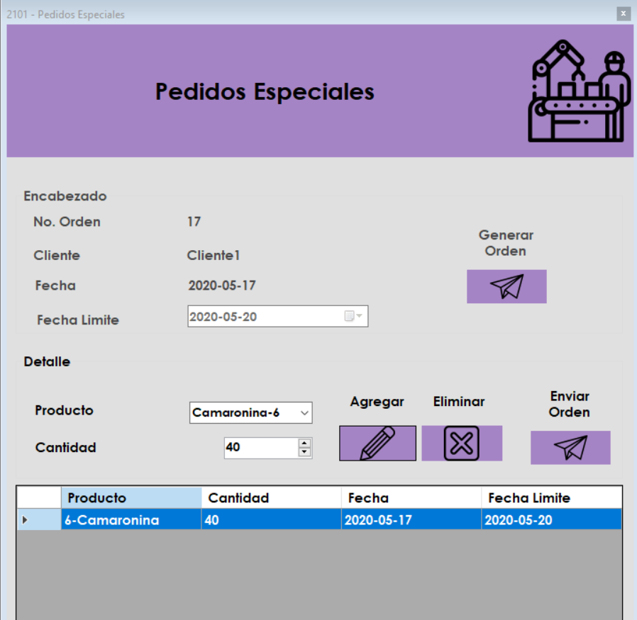
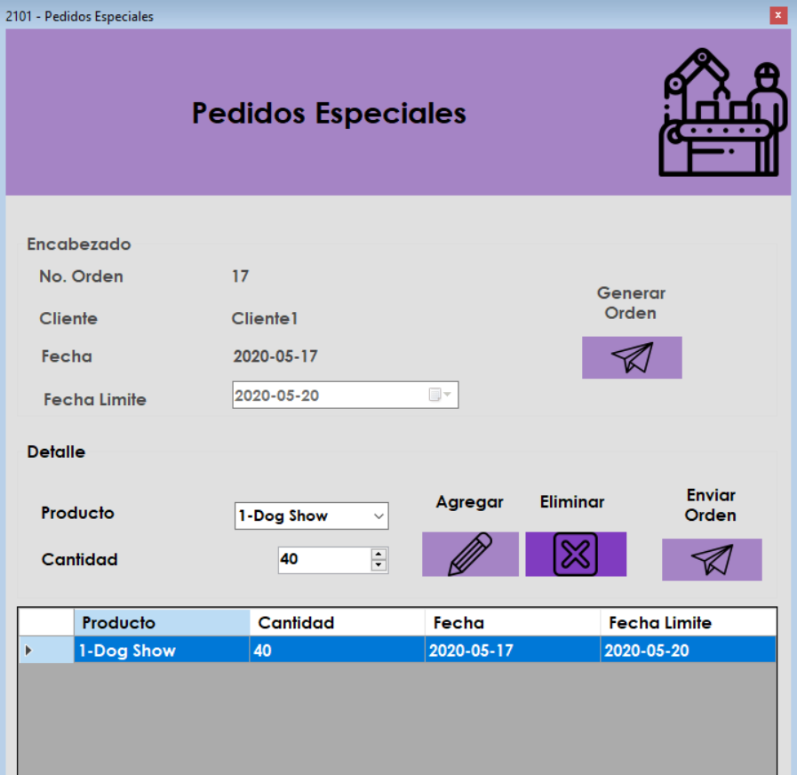
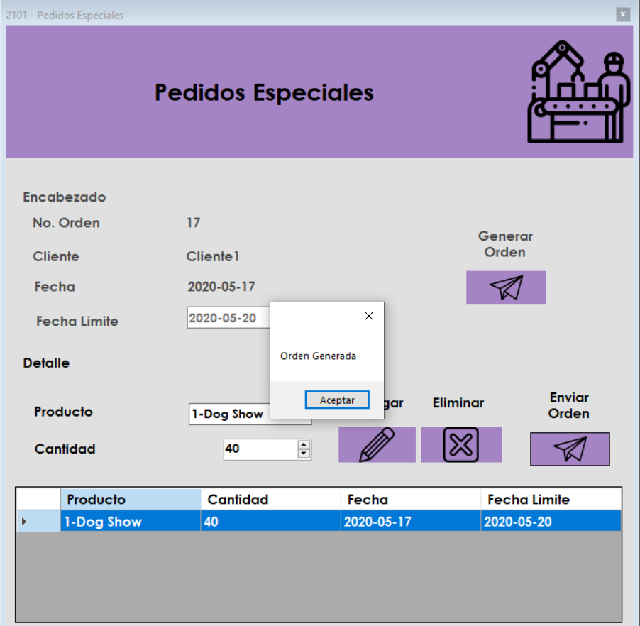

Pantalla de Inicio
Los pedidos especiales son Ordenes Tomadas en el area de CRM a clientes que piden cantidades grandes fuera de lo habitual que la empresa fabrica
Configurar Fecha
Al abrir el formulario le permite configurar la fecha limite mas alla de 7 dias como parametro general de espera para una produccion grande. dará clic en "Generar Orden" una vez colocada la fecha.

Ingresar Producto y Enviar Orden
Añada productos seleccionandolos y dadno clic en el boton "Agregar". Tambien podrá eliminar los productos añadidos dando clic sobre el producto añadido y luego dadno clic en "eliminar".



Menu Inferior
En el menu inferior que se actualiza cada 15 segundos aparecerán las ultimas 4 ordenes pendientes.